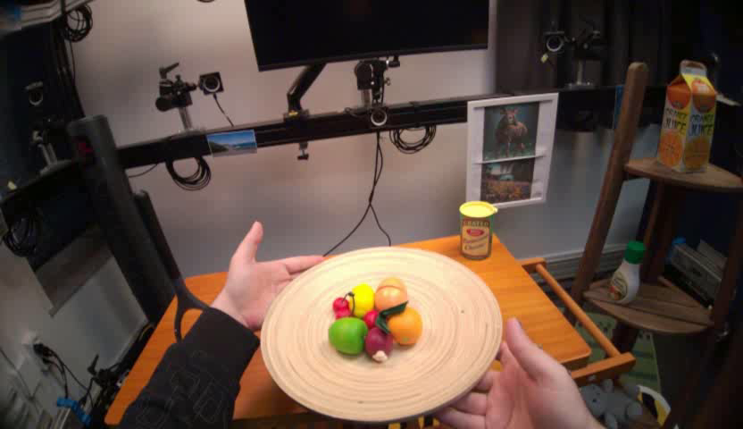

DeXplicit: Making Physical State Explicit
in Dexterous Manipulation World Models
1 S-Lab, Nanyang Technological University2 University of California, Berkeley
Physical prediction first.
Visual synthesis second.
DeXplicit separates the evolution of the physical world from its visual appearance. Given initial scene geometry and a proposed hand trajectory, the DeXplicit 3D model predicts object motion in 3D. Those trajectories guide the DeXplicit renderer, carrying observed appearance into future views.
From hand actions to visual futures.
A structured interface connects the DeXplicit 3D model to the DeXplicit renderer.
Observe & act
Initial image and metric scene points, object identities, hand trajectories, and calibrated cameras.
DeXplicit 3D model
Joint-aware actions drive shared object motion, local deformation, and bounded pose refinement.
Transport appearance
Project predicted geometry and initial-image features. Confidence identifies regions to preserve or complete.
DeXplicit renderer
Synthesize conditioned video, with a causal variant that uses its own previously generated history.
DeXplicit renderer (14B) outputs

Compact DeXplicit renderer (1.3B) · PCA feature colors.
Follow the motion.
Keep the object.
Object rotation, transport, and two-hand interaction · DeXplicit renderer (14B).
Predict the physical response.
The DeXplicit 3D model forecasts object trajectories from the initial scene and hand motion.
Colored points show the object; pale outlines mark its initial state.
Articulation & deformation
Predicted geometry projected onto recorded RGB.
A visual future, one block at a time.
The causal DeXplicit renderer conditions on its own generated history, producing eight four-frame blocks with two denoising steps per block.
Causal-DeXplicit renderer and hand controls · generated latent history.
More accurate object motion.
Long-horizon moved-point error across states 1–32. Both models receive identical initial scene and action inputs.
Valid point-time weighted mean · mm.